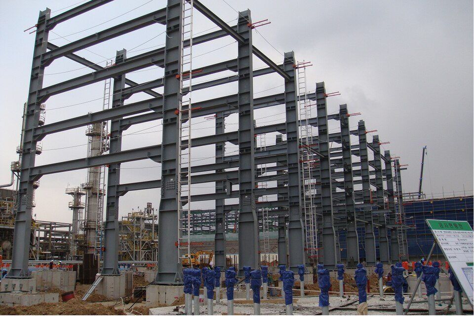
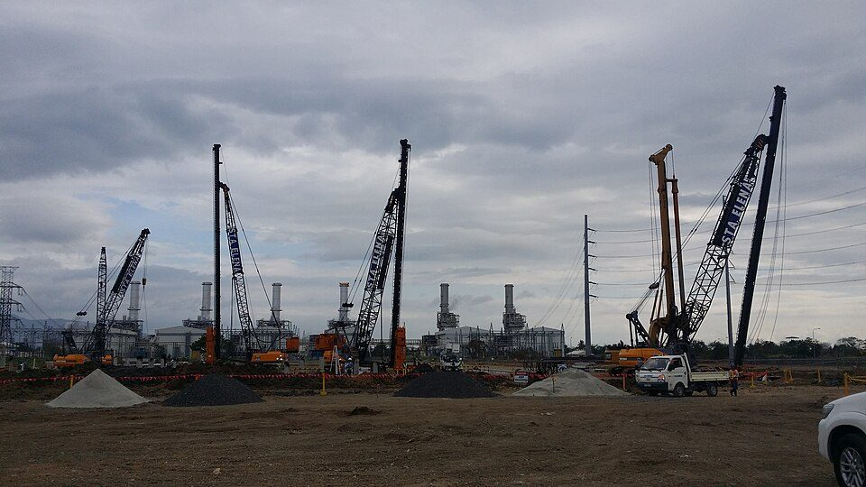
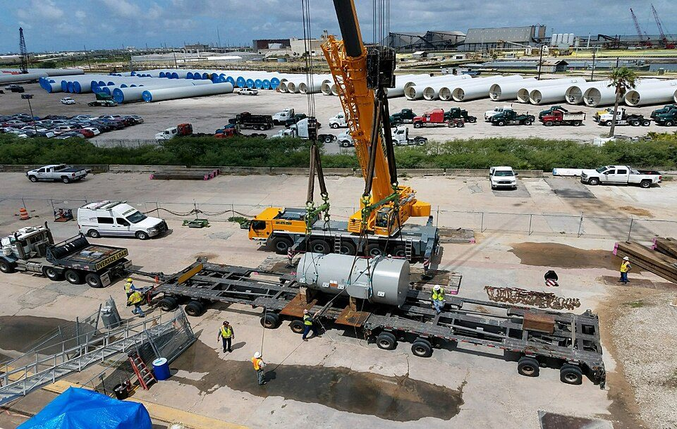

プラント建設工事の全体的な流れ：準備工事から据付・配管・検査・試運転まで
要点まとめ
プラントの建設は、設計と機器の調達が進むのと並行して、現場で何年もかけて行われます。この記事では、建設現場で何がどの順番で行われるかを、法令、厚生労働省の資料、大手エンジニアリング会社の公式情報でまとめました。プロジェクト全体の流れや契約の形はプラント業界の仕事の進め方、専門用語はプラント設計で使われる専門用語100選にまとめています。

工事の全体像
現場の立ち上げから、土建・据付・配管・計装・電気へ
工事は、サブコン（下請け）を使って進める
東洋エンジニアリングは、工事本部の仕事を、宿舎やオフィスの建設など現場の立ち上げから、土建工事・機器据付工事・配管工事・計装工事・電気工事までと説明し、これらをサブコンを使って行うとしています[1]。千代田化工建設は、機器・配管・鉄骨・電気・計装・保温などの設計と調達品のスケジュールを合わせなければならないとしています[7]。
| 工事の中身 | 建設業法の工事の種類 |
|---|---|
| 杭打ち・基礎・重量物の揚重・鉄骨の組立て | とび・土工・コンクリート工事 |
| 鉄骨の工事・貯蔵用タンクの設置 | 鋼構造物工事 |
| プラント設備の工事 | 機械器具設置工事 |
| 配管 | 管工事 |
| 構内の電気設備 | 電気工事 |
| 化学工業などの設備の保温・保冷 | 熱絶縁工事 |
| 鋼構造物の塗装（下地のブラストを含む） | 塗装工事 |
出典: 国土交通省 中国地方整備局「建設業許可申請の手引き」の業種区分一覧表[8]。建設業の許可は、工事の種類ごとに受けます[9]。
着工の前に：許可と届出
国内でプラントを建てるときは、工事を始める前に、法律ごとの許可や届出が必要です。
| 手続き | 内容 |
|---|---|
| 高圧ガスの製造の許可 | 事業所ごとに都道府県知事の許可を受ける（高圧ガス保安法 第5条）[4] |
| 危険物施設の設置の許可 | 製造所・貯蔵所・取扱所ごとに市町村長等の許可を受ける（消防法 第11条）[5] |
| ボイラー・クレーンなどの設置の届出 | 工事の開始の30日前までに労働基準監督署長へ（労働安全衛生法 第88条）[10] |
| 高さ31mを超える建物・工作物の建設の届出 | 仕事の開始の14日前までに労働基準監督署長へ[10][6] |
| 電気設備の工事計画の届出 | 届出が受理されてから30日たつまで、工事を始められない（電気事業法 第48条）[11] |
準備工事・杭・基礎・鉄骨
まず、現場で暮らし、働くための準備をする
離れた場所では、作業員の宿舎や食料も用意する
日揮は、瀬戸内海の大崎上島で行ったCO2分離回収設備の工事で、離島のため、最盛期400人の作業員全員が寝食を共にする環境を整えたと紹介しています[12]。機器や材料は、すべて海上輸送で運びました[12]。

重い機器を支えるため、杭を打ち、基礎をつくる
北極圏のLNG基地では、凍土に杭を6万本以上
ロシアのヤマルLNGでは、永久凍土に6万本を超える杭を打ちました[13]。日揮は、オーストラリアのイクシスLNGで、重さ5,000トンを超えるものもあるモジュールを、直径900〜1,500mmの鋼管杭で直接支える基礎を開発したと紹介しています[14]。
大きなタンクは、基礎の段階から消防の検査を受ける
完成の前に、工事の工程ごとに検査がある
液体の危険物を入れるタンクがある施設は、完成検査の前に、工事の工程ごとに市町村長等の検査（完成検査前検査）を受けます（消防法 第11条の2）[5]。容量1,000キロリットル以上の屋外タンクの基礎・地盤や、配管などを付ける前のタンク本体が対象です[15]。
機器の据付とモジュール工法

塔や大きな機器は、大型クレーンで吊って据え付ける
2,000トンのクレーンを含む100台を使った例も
千代田化工建設は、巨大プロジェクトで、最大吊り荷重2,000トンのクレーンをはじめ100台のクレーンを使った例を挙げています[7]。大崎上島の工事では、長さ約40mのCO2吸収塔を、国内の通常の建設工事では見ることのない500トンのクレーンで吊り上げて据え付けました[12]。
モジュール工法：別の場所で組み立てて運ぶ
現場の基礎工事と同時に進め、工期を縮める
日揮は、モジュール工法を、建設現場と別の場所（モジュールヤード）で鉄骨・配管・機器などをひとまとまりにして製作し、現地に運んで据え付ける工法と説明しています[2]。現場の作業を大きく減らせ、天候や作業員の確保のリスクを下げられ、モジュールの製作と現場の基礎工事を同時に進められるので工期を縮められるとしています[2]。
| 案件（国） | 規模を示す数字 |
|---|---|
| ヤマルLNG（ロシア） | アジアの10のヤードでモジュール142個とパイプラック365個、計48万トン超を製作[20] |
| フリーポートLNG（米国） | 構造用の鉄骨4万4,000トン、電線・ケーブル1,689マイル（約2,700km）[21] |
| パールGTL（カタール） | ピーク時に約60か国から5万人超が働いた[22] |
| ハブシャン5（UAE） | ピーク時に40か国・2万人以上の作業員[23] |
| USGCエチレン（米国） | 日揮の駐在員25人で、現地の作業員5,000人をまとめた[24] |
| LNG受入基地（福島県新地町） | 40か月の短い工期で、2018年に完工[25] |
フリーポートLNGは、千代田化工建設が加わった共同企業体の案件です[21]。km への換算は筆者によります。
配管・電気計装・保温塗装
配管は、工場で一部を組み、現場で溶接してつなぐ
溶接のあとは、非破壊試験と耐圧試験で確かめる
厚生労働省の技能実習の審査基準は、プラント配管の作業として、管の切断や曲げ、仮付け溶接、簡単なプレハブ配管の組立て、フランジの接合などを挙げています[26]。関連する作業には、配管用ラックの作業、保温・保冷・塗装、配管の掃除（フラッシング）、非破壊試験や耐圧試験などの検査が含まれます[26]。
| 設備 | 試験 |
|---|---|
| 高圧ガス設備 | 耐圧試験：常用の圧力の1.5倍以上（水などの液体で行う）。液体で行うのが難しいときは、気体で1.25倍以上[3] |
| 高圧ガス設備 | 気密試験：常用の圧力以上[3] |
| 危険物を扱う配管 | 水圧試験：最大常用圧力の1.5倍以上で、漏れなどがないこと[15] |
出典: 一般高圧ガス保安規則 第6条、危険物の規制に関する政令 第9条（2026年11月10日時点）。
溶接や検査には、資格や教育が必要
非破壊試験の技術者の資格登録は、約8万4,000件
アーク溶接の業務には、特別教育が必要です[6]。日本溶接協会の溶接技能者の適格性証明書は有効期間が1年で、資格の登録から3年たつと再評価を受けます[27]。日本非破壊検査協会によると、非破壊試験技術者（JIS Z 2305）の資格登録は2025年10月1日時点で83,692件です[28]。
電気・計装は、配線のあとに1本ずつ確かめる
計器から制御室までの「ループチェック」
国際規格IEC 62382は、計装のループチェックを、ループの工事（据付と端子間の確認を含む）が終わってから、コールド・コミッショニングが始まるまでの間の作業としています[29]。千代田化工建設は、計装のループチェックを、建設の最終段階に始まる試運転の準備（プレコミッショニング）に含めています[30]。
保温・塗装・耐火被覆で、設備を守る
耐火被覆は、消火までの時間を稼ぐためのもの
日揮の技術ジャーナルは、耐火被覆の目的を、火災の2次被害を防ぎ、本格的な消火ができるまでの時間を稼ぐことと説明しています[31]。炭化水素を扱うプラントでは対象の範囲が広く、施工にも時間がかかるので、工程への影響も大きいとしています[31]。
検査を受けて、試運転へ
工事が終わっても、法律で決まった検査に合格するまでは、設備を使えません。
| 設備 | 検査と、検査する人 |
|---|---|
| 高圧ガスの製造施設 | 完成検査。都道府県知事が行う。高圧ガス保安協会や指定完成検査機関の検査を受けて届け出てもよい（高圧ガス保安法 第20条）[4][32] |
| 危険物の製造所・貯蔵所・取扱所 | 完成検査。市町村長等が行い、合格すると完成検査済証が出る（消防法 第11条）[5][15] |
| ボイラー・第一種圧力容器 | 落成検査。所轄の労働基準監督署長が行う[33] |
| クレーン（つり上げ荷重3トン以上） | 落成検査。所轄の労働基準監督署長が行う[10][17] |
| 電気設備（工事計画を届け出たもの） | 使用前自主検査。設置者が自ら行い、結果を記録・保存する（電気事業法 第51条）[11] |
高圧ガス保安法や電気事業法の適用を受ける第一種圧力容器などは、労働安全衛生法の落成検査の対象から除かれます[16]。
千代田化工建設は、試運転を次の3つの段階で説明しています[30]。
- 準備
プレコミッショニング：建設の最終段階に始まる
初期の試験、工事の残り作業の一覧（パンチリスト）とチェックシート、計装のループチェックなど[30]
- 試運転
コミッショニング：プラントを動かして試験する
システムやサブシステムごとに、順に試運転して引き渡す[30]
- 起動
スタートアップ：商業運転に入る
試運転には、数か月かかる
国内の処理施設では、約5か月の計画
日本環境安全事業（JESCO）は、東京のPCB廃棄物処理施設の試運転を約5か月の予定とし、機器単体・連動の試運転と系統のフラッシング、模擬の廃棄物での運転、実際の廃棄物での運転の順に進めると説明しています[34]。日揮は、米国のエチレンプラントで、プラントの完成から約3か月で試運転と性能保証試験を終えた例を紹介しています[24]。
現場の安全と、働く人
元請が、すべての下請をまとめて安全を管理する
協議組織・連絡調整・巡視は、法律で決まった義務
労働安全衛生法は、建設業の元請（特定元方事業者）に、協議組織の設置と運営、作業間の連絡と調整、作業場所の巡視などを求めています[10]。巡視は、毎作業日に少なくとも1回行います[6]。常時50人以上が働く現場では、元請が統括安全衛生責任者を選び、下請はそれぞれ安全衛生責任者を選びます[10][16]。厚生労働省の指針は、協議組織の会議を毎月1回以上開くよう求めています[35]。
厚生労働省の委託事業でつくられた職長向けのテキストは、毎日の安全の活動（安全施工サイクル）を次のように示しています[36]。
見方: 建設業全体の数字で、プラントの工事だけのものではありません。2025年（令和7年）の214人は前年より18人少ないものの、業種別では最も多くなっています[38]。事故の型では、墜落・転落が91人で最も多くなりました[37]。
新しく現場に入った人には、最初に教育をする
死亡災害の約6割は、入場から7日以内といわれる
職長向けのテキストは、建設業の死亡災害の約6割は、現場に入って7日以内に起きているといわれるとして、新しく入場する人への教育の大切さを説明しています[36]。
クレーンや玉掛けには、免許や技能講習が必要
現場には、技術者の配置も義務づけられている
つり上げ荷重5トン以上のクレーンの運転にはクレーン・デリック運転士免許が、1トン以上の荷の玉掛けには玉掛け技能講習の修了などが必要です[17]。建設業法は、すべての工事に主任技術者を置くことを求め、元請が下請に出す額が5,000万円以上（建築工事業は8,000万円以上）なら監理技術者を置きます[9][39]。
新設工事と定期修理の違い
動いているプラントを止めて行う定期修理では、設備を分解したり、中に入ったりする作業があります。化学設備のこうした作業を頼む発注者は、作業が始まるまでに、物の危険性や注意する点などを書いた文書を請負人に渡す決まりです[6]。ENEOSの技術誌（2019年）は、製油所の装置の定期修理の期間を約1か月、間隔を4年ごとと紹介しています[40]。運転中の検査の仕組みはプラントとは何かにまとめています。
今回確認できなかった点
- コンクリートの量や配管の長さなど、日本のエンジニアリング会社が公表した資材の量
- 基礎・鉄骨・配管などの工事ごとの期間や人数の目安、工程表の公式の例
- フラッシング・ブロー・乾燥など、試運転の準備の順番と方法を日本語で説明した公式資料
- 「機械的完成」の公的な日本語の定義
- 耐火被覆の日本の法令上の根拠
- 電気事業法の使用前自主検査が、工場のどの設備に当たるか
出典（40件）
閲覧日はいずれも2026年11月10日
- 新卒採用 職種紹介（工事本部）（東洋エンジニアリング）
- 日揮グループのモジュール工法（日揮ホールディングス）
- 一般高圧ガス保安規則（e-Gov法令検索）
- 高圧ガス保安法（e-Gov法令検索）
- 消防法（e-Gov法令検索）
- 労働安全衛生規則（e-Gov法令検索）
- ビジネスモデル：建設（千代田化工建設）
- 建設業許可申請の手引き（令和8年4月改訂、PDF）（国土交通省 中国地方整備局）
- 建設業法（e-Gov法令検索）
- 労働安全衛生法（e-Gov法令検索）
- 電気事業法（e-Gov法令検索）
- プロジェクトストーリー：広島県 大崎クールジェンプロジェクト（日揮ホールディングス）
- Yamal LNG case study（PDF、英語）（TechnipFMC）
- 日揮技術ジャーナル 第5巻第2号「モジュール構造物杭基礎技術の開発」（2016年、PDF）（日揮）
- 危険物の規制に関する政令（e-Gov法令検索）
- 労働安全衛生法施行令（e-Gov法令検索）
- クレーン等安全規則（e-Gov法令検索）
- プロジェクト：エチレンプラント（千代田化工建設）
- 事業戦略説明会 書き起こし（2024年12月10日、PDF）（東洋エンジニアリング）
- Yamal LNG（Case study、英語）（Technip Energies）
- Projects: Freeport LNG（英語）（McDermott）
- Projects: GTL Plant（Pearl GTL、英語）（日揮ホールディングス）
- プロジェクト：ガス処理プラント（ハブシャン）（日揮ホールディングス）
- プロジェクトストーリー：アメリカ USGCエチレンプロジェクト（日揮ホールディングス）
- プロジェクト：LNG受入基地（福島県新地町）（日揮ホールディングス）
- 技能実習 審査基準 配管職種（プラント配管作業）（PDF）（厚生労働省）
- 溶接技能者 制度紹介（日本溶接協会）
- NDTフラッシュ Vol.75 No.3（PDF）（日本非破壊検査協会）
- IEC 62382:2024 Electrical and instrumentation loop check（規格の紹介ページ、英語）（EVS（エストニア標準化機関））
- Commissioning（Business model、英語）（千代田化工建設）
- 日揮技術ジャーナル 第5巻第4号「耐火・耐冷被覆の概要と最近の動向」（2016年、PDF）（日揮）
- 高圧ガスの製造に係る申請手続き（高圧ガス保安協会）
- ボイラー及び圧力容器安全規則（e-Gov法令検索）
- 東京PCB廃棄物処理施設における試運転について（PDF）（日本環境安全事業（現 中間貯蔵・環境安全事業））
- 元方事業者による建設現場安全管理指針について（平成7年基発第267号の2、PDF）（厚生労働省）
- 建設業職長等指導力向上教育研修会テキスト（平成28年度版、PDF）（厚生労働省（委託事業））
- 令和7年における労働災害発生状況（確定値）（PDF）（厚生労働省）
- 令和7年の労働災害発生状況を公表（2026年5月27日）（厚生労働省）
- 建設業法施行令（e-Gov法令検索）
- JXTG Technical Review 第61巻第3号「高圧ガス保安法 国内初のスーパー認定取得」（2019年、PDF）（JXTGエネルギー（現 ENEOS））
写真・画像の出典（3件）
- 建設中のパイプラック（配管を載せる鉄骨の架台）
写真: Pbujair／Wikimedia Commons（CC BY-SA 4.0） - 杭打ちの様子（フィリピン）
写真: Jenv Corre／Wikimedia Commons（CC BY-SA 4.0） - 大型クレーンで重い容器を吊り、輸送車に載せる様子（米国）
写真: U.S. Army Corps of Engineers／Wikimedia Commons（パブリックドメイン）